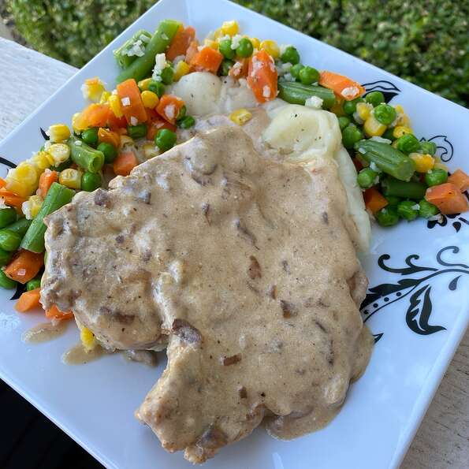

Lemon, Yogurt, and Dill Chicken Thighs with Roasted Veggies Prep: 20 mins Cook: 50 mins Total: 1 hr 10 mins Servings: 4 Yield: 4 servings Click for recipe
Slow Cooker French Onion Pork Chops  Prep: 10 mins Cook: 8 hrs 15 mins Total: 8 hrs 25 mins Servings: 5 Yield: 5 servings Click for recipe